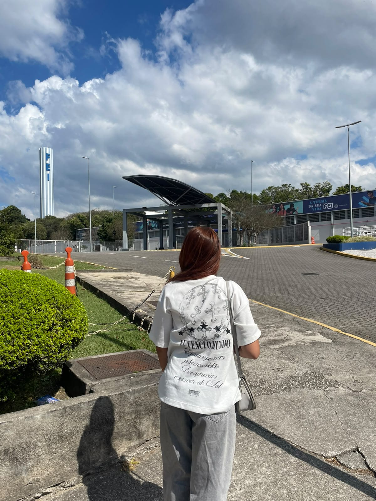
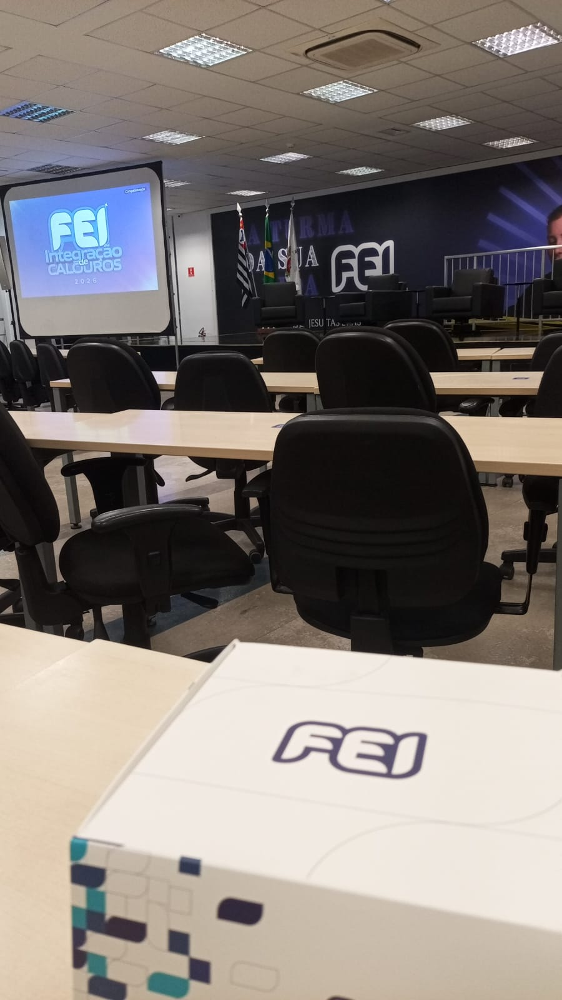
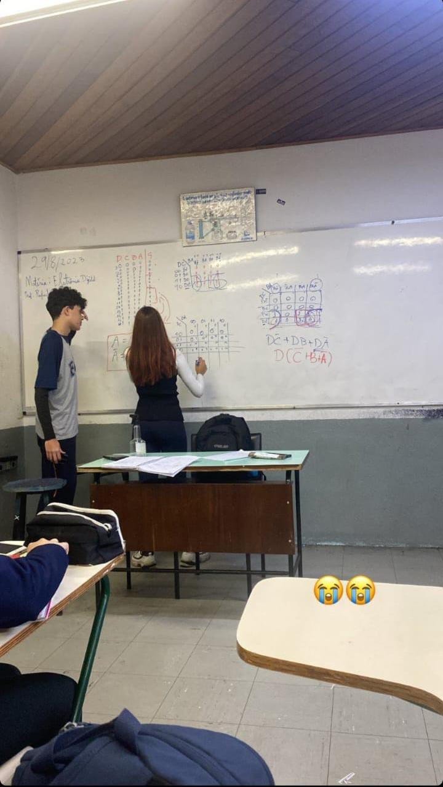
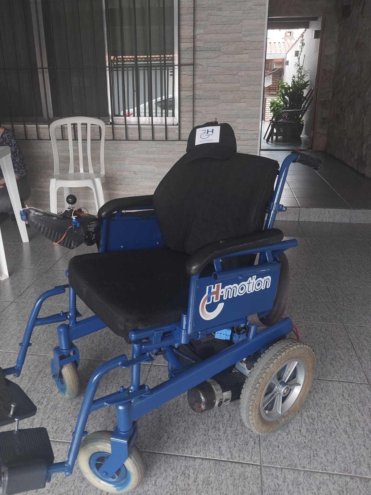
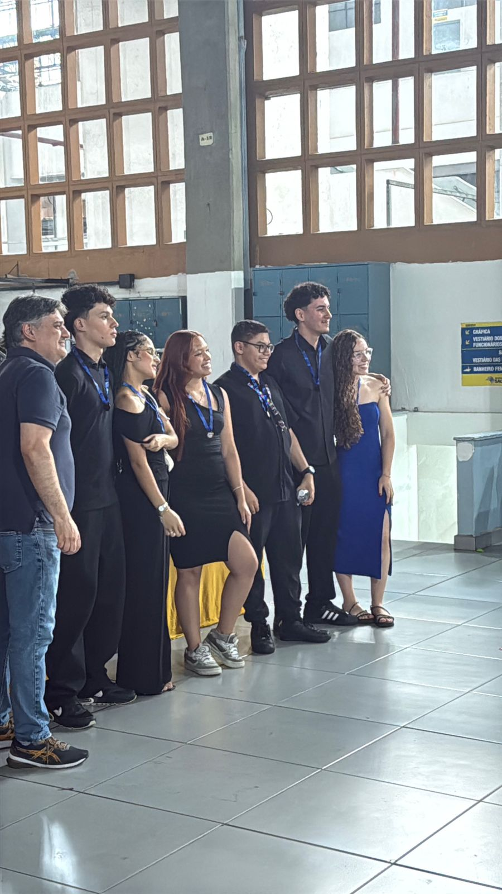

Rafaela Croco Da Silva
Olá!
Eu sou uma estudante da área de ciência da computação, no 1º período da faculdade, na instituição Fundação Educacional Inaciana "Pe. Sabóia de Medeiros" (FEI). Atualmente, faço estágio em uma empresa que vende ERP's para indústrias, atuo na parte de Suporte, meu trabalho é focado em entender o funcionamento do sistema e rotinas de backup/atualização referente ao banco de dados dos clientes, enquanto ajudo os clientes com dúvidas e imprevistos relacionado ao produto.
Antes de escolher ingressar na FEI, estudei na Escola Técnica Estadual Jorge Street, cursando o tecnólogo de Automação Industrial integrado com o ensino médio. Na conclusão do meu tecnólogo pude ter experiências desafiadoras para a realização do Trabalho de Conclusão de Curso (TCC), porém, nada explica a realização que senti ao observar o projeto funcionando. O H-Motion, foi um projeto de uma cadeira de rodas motorizada que se moveria ao analisar para que lado a cabeça do usuário indicasse, através de um sensor. Caso tenha interesse em assistir um vídeo que mostra um pouco do projeto clique aqui.
Instituição Fundação Educacional Inaciana "Pe. Sabóia de Medeiros" (FEI)



Escola Técnica Estadual Jorge Street



Habilidades:
- Inglês intermediário
- Pacote Office
-
Conhecimentos em programas, como:
- EZCAD;
- PRINT EXP E MAIN TOP;
- PHOTOSHOP;
- COREL DRAW;
-
Conhecimentos em desenvolvimento:
- HTML E CSS;
- JavaScript;
- Banco de dados;
- Python;